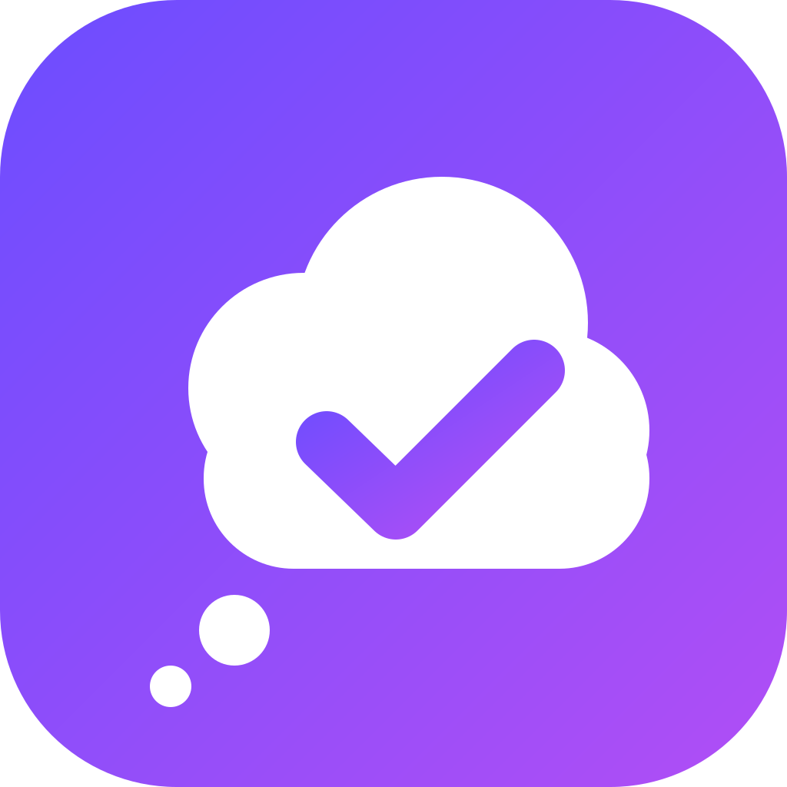

MindueTermini d’uso
Ultimo aggiornamento: 2 novembre 2026
1. Il servizio
Mindue è un’app che aiuta a ricordare scadenze personali e familiari tramite promemoria sul telefono, e permette di condividerle in gruppi privati (famiglia, lavoro, amici) con una chat.
2. Account
Per usare Mindue serve un account (email e password). Sei responsabile di ciò che fai con il tuo account. Puoi eliminarlo in qualsiasi momento da Impostazioni › Account › Elimina account.
3. Gruppi e chat: regole di comportamento
Nei gruppi non sono tollerati contenuti offensivi, di odio o discriminatori, contenuti sessuali o violenti, minacce, molestie, spam o contenuti illegali, né la condivisione di dati di altre persone senza il loro consenso.
Ogni utente può segnalare un messaggio e bloccare una persona tenendo premuto un suo messaggio nella chat. Il messaggio segnalato sparisce subito per chi lo segnala; una persona bloccata non è più visibile e non invia più avvisi a chi l’ha bloccata.
Le segnalazioni vengono esaminate entro 24 ore. Se un contenuto viola queste regole, viene rimosso e l’account di chi l’ha pubblicato può essere sospeso o eliminato.
4. Informazioni fornite dall’app
Le date suggerite (ad esempio ISEE, IMU, cambio gomme) e i consigli mostrati nell’app sono informazioni generali, che possono cambiare nel tempo o variare in base al luogo e alla situazione personale. Verifica sempre le scadenze sulle fonti ufficiali o con un professionista. I dati letti automaticamente dai documenti possono contenere errori: controllali prima di salvarli. I promemoria dei farmaci sono semplici promemoria e non sono consigli medici.
5. Responsabilità
I promemoria dipendono dal corretto funzionamento del telefono (notifiche attive, batteria, impostazioni). Mindue non garantisce che ogni notifica venga consegnata e non è responsabile di scadenze mancate, sanzioni o danni derivanti dall’uso dell’app, nei limiti consentiti dalla legge.
6. I tuoi dati
Le scadenze personali restano sul tuo dispositivo. Le scadenze, i messaggi e i file dei gruppi sono condivisi solo con le persone del gruppo. Vedi l’informativa privacy.
7. Modifiche
Questi termini possono essere aggiornati; la versione in vigore è sempre pubblicata su questa pagina. Legge applicabile: legge italiana.
Terms of use (English)
Mindue helps you remember personal and family deadlines and share them in private groups with a chat. An account is required and can be deleted at any time (Settings › Account › Delete account).
Zero tolerance: offensive, hateful, sexual or violent content, threats, harassment, spam or illegal content are not allowed in groups. Users can report a message and block a person by long-pressing one of their messages. Reports are reviewed within 24 hours; offending content is removed and the author’s account may be suspended or deleted.
Suggested dates and tips are general information that may change or vary by country: always check official sources. Data read automatically from documents may contain errors. Medication reminders are not medical advice. Reminders depend on your device settings; to the extent permitted by law, Mindue is not liable for missed deadlines or resulting penalties. Governing law: Italy.
© Mindue · Contatti / Contact: edvesolution@gmail.com